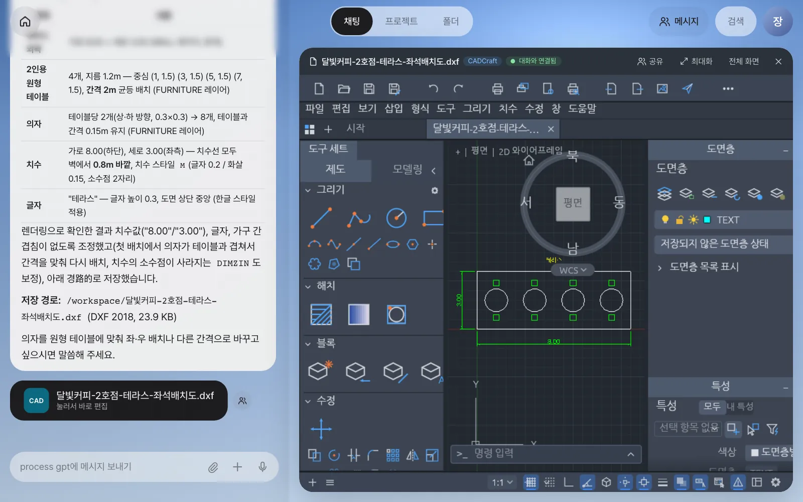
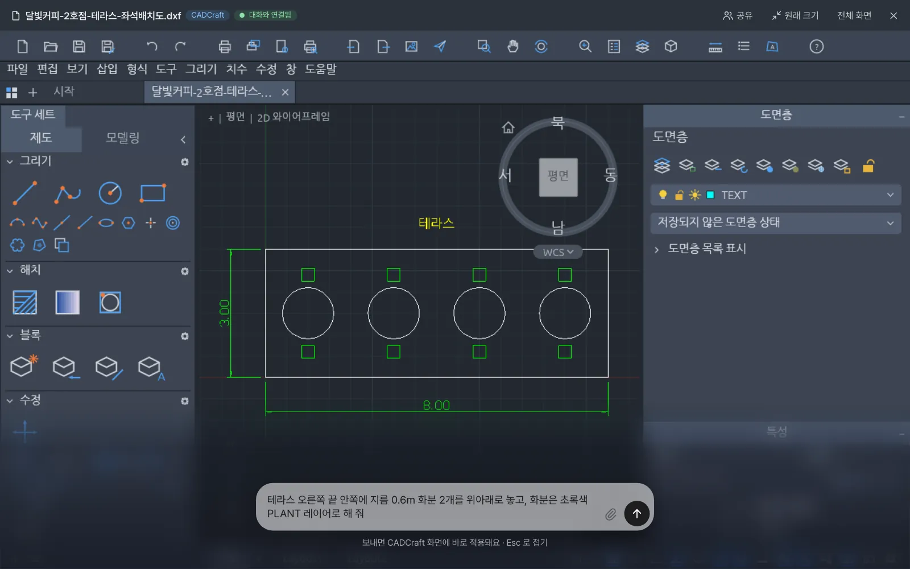
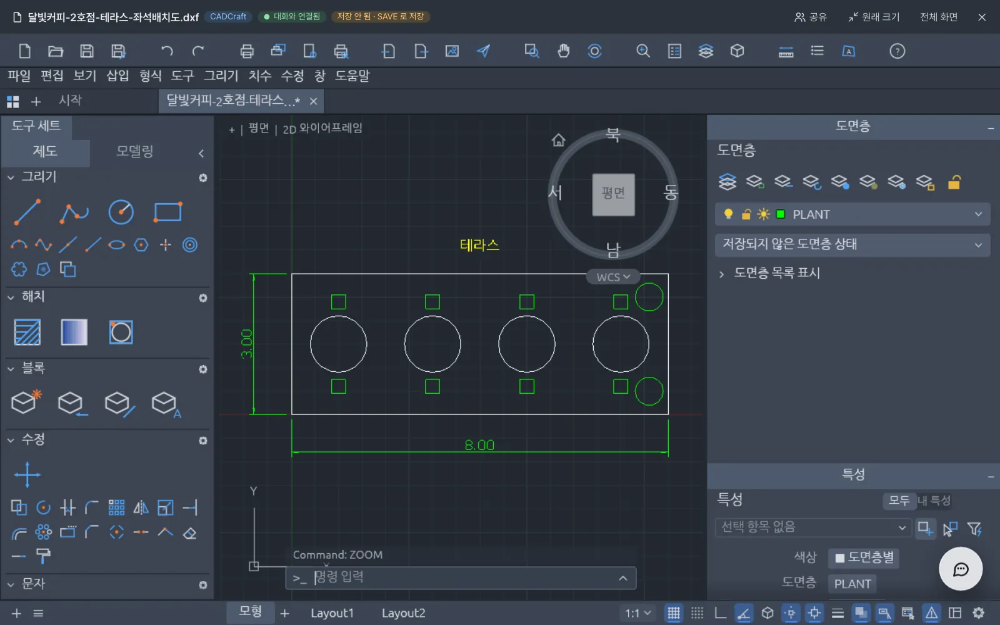
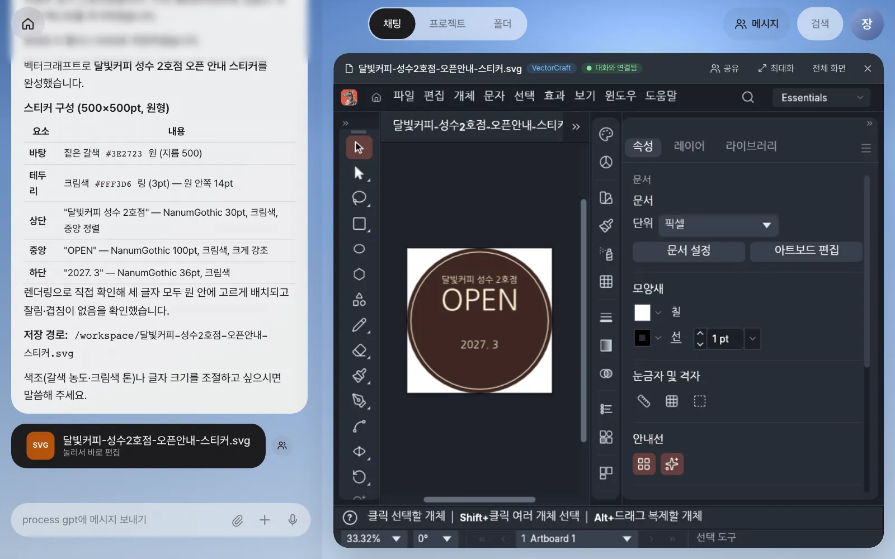
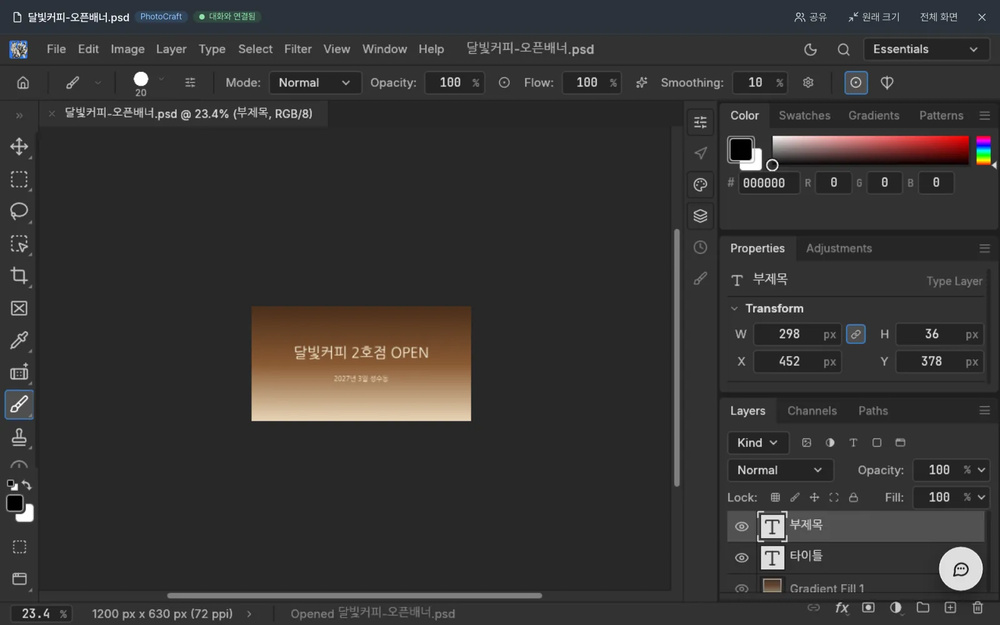
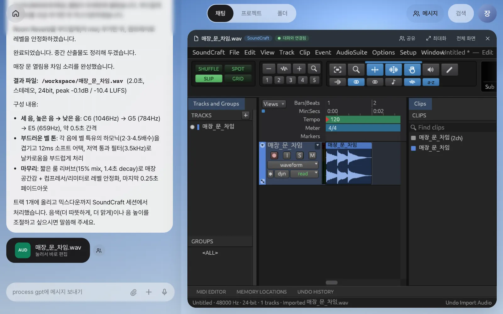
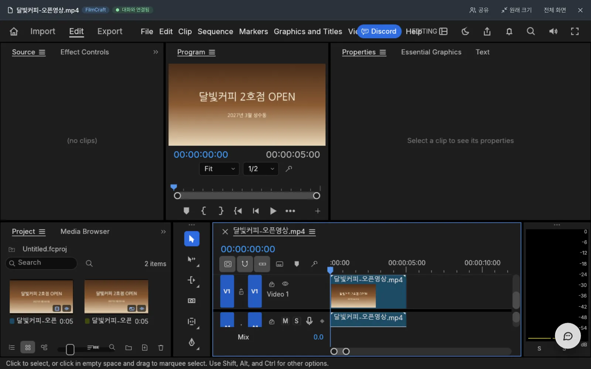

문서 말고도 매장 일에는 도면, 스티커, 홍보 이미지, 알림음, 짧은 영상이 필요합니다. Lite는 오픈소스 ArtCraft 앱 다섯 개(캐드크래프트·벡터크래프트·포토크래프트·사운드크래프트·필름크래프트)를 이음오피스처럼 채팅 옆에서 열고, 비서가 그 앱의 도구로 직접 만들고 고치게 합니다. 열린 앱을 대화로 함께 고치는 라이브 공동 편집도 따라 합니다.
다섯 앱 한눈에#
7장에서는 문서를 편집기에 열어 둔 채 말로 고쳤습니다. 이 장에서는 같은 방식으로 도면·그림·소리·영상을 다룹니다.
| 앱 | 다루는 것 | 파일 | 카드 타일 | 이 장의 예 |
|---|---|---|---|---|
| 캐드크래프트 (CADCraft) | 2D 도면 | .dxf | CAD | 2호점 테라스 좌석 배치도 |
| 벡터크래프트 (VectorCraft) | 로고·스티커·배너 같은 벡터 그림 | .svg | SVG | 창문용 오픈 안내 스티커 |
| 포토크래프트 (PhotoCraft) | 레이어 이미지·사진 보정 | .psd .png | IMG | 오픈 홍보 배너 |
| 사운드크래프트 (SoundCraft) | 소리·음악 편집 | .wav | AUD | 문 열림 차임 |
| 필름크래프트 (FilmCraft) | 영상 편집 | .mp4 | VID | 5초 홍보 영상 |
모든 앱은 같은 원리로 동작합니다.
- 채팅에서 앱 이름이나 만들 것을 말하면 비서가 그 앱의 도구를 켜고 파일을 만듭니다. 답 끝에 파일 카드가 붙습니다.
- 카드를 누르면 앱이 채팅 옆에 열리고 「대화와 연결됨」이 켜집니다.
- 열린 동안 채팅(또는 최대화 다이얼)에 적은 요청은 열린 화면에서 바로 적용됩니다. 끝나면 짧은 검수 메모가 붙습니다.
- 앱에서 저장하면 편집본이 올라가고 카드가 그것을 가리킵니다.
요청에 무엇을 만들지 분명히
비서는 메시지에 “도면·캐드·평면도·배치도”, “벡터·로고·배너·svg”, “사진·이미지·psd·썸네일”, “효과음·알림음·배경음·wav”, “영상·동영상·클립·mp4” 같은 말과 “만들어·그려·편집·바꿔” 같은 동사가 함께 있을 때만 그 앱의 도구를 켭니다. 도구를 한꺼번에 너무 많이 켜면 비서가 헷갈리기 때문입니다. “캐드크래프트로 …”처럼 앱 이름을 넣으면 가장 확실합니다.
따라 하기 1 — 캐드크래프트로 테라스 배치도#
디자이너 김민지가 쓰던 CAD 작업을, 장진영 팀장도 말로 시작해 봅니다.
캐드크래프트로 달빛커피 2호점 테라스 좌석 배치도를 그려 줘. 테라스는 가로 8m, 세로 3m이고 2인용 원형 테이블 4개와 의자를 일정한 간격으로 놓아 줘. 테두리 치수와 '테라스' 글자도 넣어 줘.
실습에서 4분쯤 걸렸습니다. 비서는 레이어를 만들고, 미터 도면에 맞는 치수 스타일을 정하고, 테이블과 의자를 놓은 뒤 직접 렌더링해 보고 “의자가 테이블과 겹친다”, “치수가 8.00이 아니라 8로 보인다”를 스스로 고친 다음 저장했습니다.

확인할 것: …테라스-좌석배치도.dxf CAD 카드, 앱 머리줄의 「CADCraft」와 「대화와 연결됨」. 답에는 레이어·치수·저장 경로를 정리한 표가 있습니다.
따라 하기 2 — 라이브 공동 편집: 다이얼로 화분 추가#
도면을 크게 보면서 고쳐 봅니다. 「최대화」를 누르면 채팅이 오른쪽 아래 다이얼로 접힙니다. 다이얼을 누르고 적습니다.
테라스 오른쪽 끝 안쪽에 지름 0.6m 화분 2개를 위아래로 놓고, 화분은 초록색 PLANT 레이어로 해 줘

비서는 열린 도면을 먼저 읽고(“열린 도면 확인 완료입니다”), 같은 화면에 PLANT 레이어와 화분 두 개를 그립니다. 다른 파일을 새로 만드는 것이 아니라 사람이 보고 있는 그 도면이 바뀝니다. 이어서 검수 메모가 붙습니다.
검수(픽셀·개수 검사): 객체 16→18 ✓

비서가 바꾼 내용도 사람이 저장해야 파일에 남습니다. 앱의 저장 버튼(캐드크래프트는 SAVE)를 누르면 편집본이 올라가고 카드가 그것을 가리킵니다.
면적 기호 ㎡
현재 버전의 캐드크래프트 화면은 글꼴에 ㎡ 기호가 없어 “12㎡”가 “12□”처럼 보일 수 있습니다. 파일 내용은 그대로이므로 걱정하지 않아도 되고, 한글 문서에 그림으로 넣으면 정상으로 보입니다(9장).
따라 하기 3 — 벡터크래프트로 오픈 스티커#
벡터크래프트로 달빛커피 2호점 창문에 붙일 원형 오픈 안내 스티커를 그려 줘. 짙은 갈색 원 바탕에 크림색 글씨로 위에는 '달빛커피 성수 2호점', 가운데 크게 'OPEN', 아래에 '2027. 3'을 넣어 줘.
약 2분 뒤 SVG 카드가 옵니다. 글자는 웹 편집기에도 있는 나눔고딕으로 들어가 있어, 열었을 때 한글이 깨지지 않고 글자를 그대로 고칠 수 있습니다.

따라 하기 4 — 포토크래프트로 홍보 배너#
포토크래프트로 1200×630 크기의 오픈 홍보 배너 이미지를 만들어 줘. 바탕은 갈색에서 베이지로 이어지는 우드 톤 그라데이션, 가운데에 크림색 큰 글씨로 '달빛커피 2호점 OPEN', 그 아래 작은 글씨로 '2027년 3월 성수동'을 넣어 줘.
포토크래프트는 결과를 레이어가 살아 있는 PSD로 저장합니다. 실습 결과는 그라데이션 배경·타이틀·부제목 세 레이어였고, 나중에 글자만 바꾸기 쉽습니다.

한글 문서 속 그림을 포토크래프트로 꺼내 고친 뒤 제자리에 넣는 방법은 9장에서 합니다.
따라 하기 5 — 사운드크래프트로 문 열림 차임#
사운드크래프트로 매장 문이 열릴 때 울릴 2초 정도의 부드러운 차임 소리를 만들어 줘. 높은 음에서 낮은 음으로 세 번 울리게 해 줘.
약 3분 뒤 매장_문_차임.wav(2.0초) 카드가 옵니다. 비서는 세 음(C6 → G5 → E5)을 합성하고, 사운드크래프트 세션의 트랙에 올려 리버브와 리미터를 건 뒤 믹스다운했다고 설명합니다.

따라 하기 6 — 필름크래프트로 5초 홍보 영상#
포토크래프트로 만든 배너로 짧은 영상을 만듭니다(같은 대화에서 이어서 요청).
필름크래프트로 방금 만든 오픈 홍보 배너 이미지를 써서 5초짜리 가로 홍보 영상을 만들어 줘. 천천히 확대되는 효과를 넣고, 마지막 1초는 검은 화면으로 서서히 사라지게 해 줘.
영상은 다섯 앱 가운데 가장 오래 걸립니다(실습에서 약 3분). 비서는 완성본의 규격과 구성을 이렇게 정리해 줍니다.
완성본: 달빛커피-오픈영상.mp4
- 규격: 1200×630 가로, 30fps, 5초(150프레임), H.264
- 구성: 0~4초 배너 천천히 확대(스케일 100→115%), 4~5초 검은 화면으로 서서히 페이드아웃

확인할 것: VID 카드 …오픈영상.mp4(함께 쓴 배너 PNG·PSD 카드도 붙음). 필름크래프트의 프로그램 화면 길이가 00:00:05:00입니다.
긴 작업이 끊겼을 때
현재 버전에서는 영상처럼 긴 작업이 서버 오류로 중간에 끊길 수 있습니다. 비서가 만들던 파일은 남아 있으므로, 같은 요청을 다시 보내면 처음부터 하지 않고 남은 파일을 확인해 이어 갑니다.
앱이 없을 때#
ArtCraft 앱은 Lite 본체와 따로 설치합니다. 앱이 없는 설치에서도 Lite의 나머지 기능은 그대로 동작하고, 해당 앱의 카드만 열 수 없습니다(예: 메일 초안에서 평면도는 건너뛰고 제안서·견적서만 만듭니다).
앱마다 두 가지가 있어야 합니다. 채팅 옆에 열리는 웹 편집기(한글이 □로 깨지지 않도록 한글 글꼴을 넣어 빌드한 것)와, 비서가 파일을 만들고 고칠 때 쓰는 명령줄 도구입니다. Docker로 설치하는 기본(lite) 구성에는 ArtCraft 앱이 들어 있지 않으므로(1장), 설치 담당자가 저장소의 artcraft/README.md를 따라 따로 넣습니다.
다음 장으로#
지금까지 문서(7장)와 도면·그림·소리·영상(이 장)을 하나씩 만들고 고쳤습니다. 다음 장에서는 고객 메일 한 통이 도착하면 비서가 평면도·설계 제안서·견적서를 한꺼번에 만들고, 제안서 속 평면도 그림을 포토크래프트로 꺼내 고친 뒤 제자리에 넣는 흐름을 따라 합니다(9장).
확인 문제
- “테라스 도면에 파라솔도 하나 넣어 줘”라고 했는데 비서가 새 도면 파일을 만들었습니다. 무엇이 달랐어야 열린 도면이 바로 바뀌었을까요?
- “이 사진 좀 밝게 해 줘”라고만 했더니 포토크래프트 도구 없이 답만 왔습니다. 어떻게 고쳐 말할까요?
- 다이얼로 화분을 추가한 뒤 앱을 닫았다가 다시 열었더니 화분이 없습니다. 왜일까요?
답
- 도면 카드를 열어 「대화와 연결됨」이 켜진 상태에서 요청해야 합니다. 앱이 열려 있으면 비서는 열린 화면을 먼저 읽고 그 자리에서 고칩니다.
- 사진 파일을 첨부하고
포토크래프트로 이 사진을 밝게 보정해 줘처럼 앱 이름이나 “이미지·사진 … 보정해”를 함께 씁니다. 그래야 포토크래프트 도구가 켜집니다. - 저장하지 않았기 때문입니다. 비서가 바꾼 내용은 저장하기 전까지 열린 화면에만 있습니다. 「저장 안 됨 · SAVE 로 저장」이 보이면 앱에서 저장해 편집본을 남기세요.